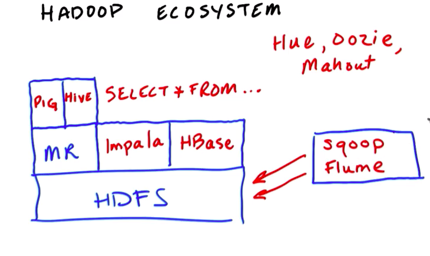

Hadoop和MapReduce入门
来自Udacity课程Introduction to Hadoop and Mapreduce的笔记
Part I Big Data
2 data source
data increases
- phone data
- online store
how to store and process large amounts of data?
3. big data
what is big data?
- order details for a store
- all orders across 100s of stores
- a person's stock portfoio
- all stock transaction for the new york
4. big data solution
big data:
- all orders across 100s of stores
- all stock transaction for the new york
5. Definition of Big Data
big data is data that is too big to process on a single machine
6 challenges
- most data is worthless. false
- data is created fast. true
- data from different sources in various formats. true
8 the 3vs
- volumes: size of data
- reliable storage: find a cheaper way
- variety: data coming from different source and format
- velocity: speed of data generation
9 data worth storing?
- transactions
- logs
- business
- user
- sensor
- medical
- social
all
11 variety
data variety. for a long time, people use sql, mysql, oracle to store their data. the problem is that data needs to be fit in pre-defined tables. and a lot of data we deal these days tend to be unstructured or semi-structured data
15 velocity
TB/day
16 Doug intro
hadoop 之父 doug cutting
Here are the papers Google published about their distributed file system (GFS) and their processing framework, MapReduce
.
17. core hadoop
store in hdfs, process with mapreduce
18. hadoop ecosystem

Part 2 HDFS and MapReduce
Part 3 MapReduce Code
Part 4 MapReduce Design Patterns
CS190: Scalable Machine Learning
see Labs here
Distributing Computing
Need more hardware to store/process modern data
Scale-up(one big machine)
- Can be very fast for medium scale problems
- Expensive, specialized hardware
- Eventually hit a wall
Scale-out (many small machine, i.e., distributed)
- Commodity hardware, scales to massive problems
- Need to deal with network communication
- Added software complexity
Apache Spark is a general, open-source cluster computing engine.
Well-suited for machine learning
- Fast iterative computations
- Efficient communication primitives
- Simple and expressive: APIs in Scala, Java, Python, R
- Integrated higher-level libraries (
MLlib, Spark SQL, Spark Streaming, GraphX)
Typical Supervised Learning Pipeline
- Obtain Raw Data
- Feature Extraction
- Supervised Learning
- Evaluation
- Predict


Copyright © 2015 Powered by MWeb, Theme used GitHub CSS.